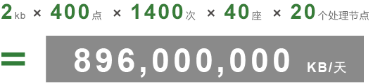
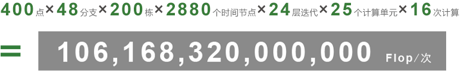

Big Data & Cloud Computing
物联网时代，数以百万计的联网传感器被嵌入到各种设备中，它们产生着数以亿计的实时数据，如滚滚洪流汹涌而至。如何有效地将其接收、处理、存贮乃至利用，成为摆在我们面前的一个巨大挑战。
以我们服务的某大型商业集团数据中心为例，其数据库每天的吞吐量为：

博锐尚格使用的节能诊断数据库执行一次KNN计算所需的计算量为：

为应对海量数据处理带来的巨大挑战，全球计算机精英们开发出众多有针对性的先进技术，并最终提出了“云计算”概念。博锐尚格成功吸收转化了MapReduce、NoSQL、OSGi等技术，研发出行业领先的大数据智能处理技术。
MapReduce是Google提出的一个软件架构，用于大规模数据集（大于1TB）的并行运算。其本质就是帮助应用开发人员将一个大作业拆分为多个小作业，然后交由不同的计算资源同时进行计算处理。
MongoDB是一个基于分布式文件存储的高性能、可伸缩的开源数据库，它使用类似json的bson格式，可存储复杂的数据类型。
OSGi技术是面向Java的动态模型系统，它使应用组件集合具备无需重启即可动态改变构造的能力。在该容器中部署的应用组件可以在较低的耦合度下实现协同工作。